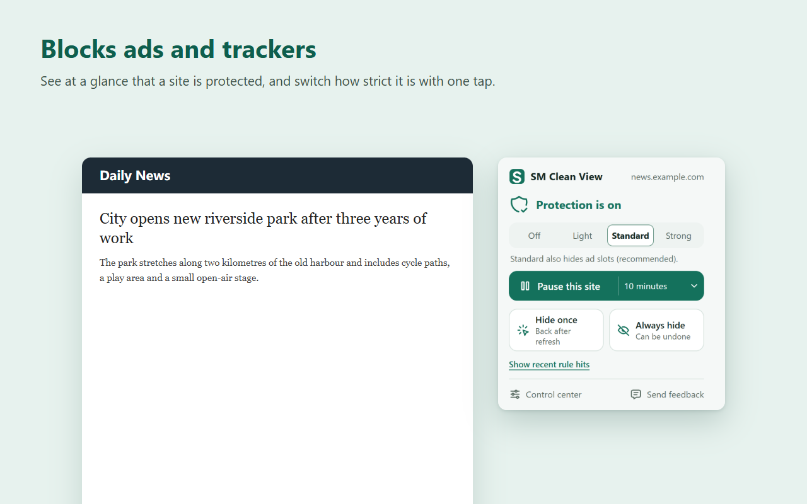
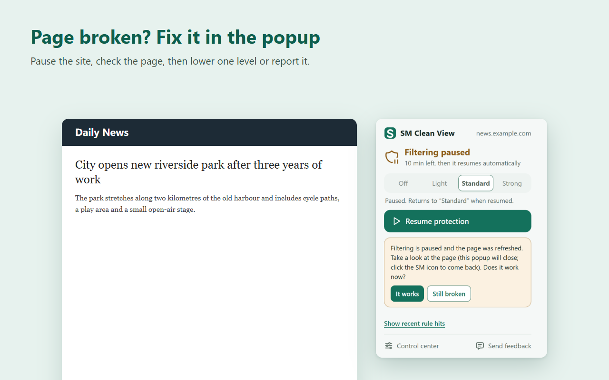
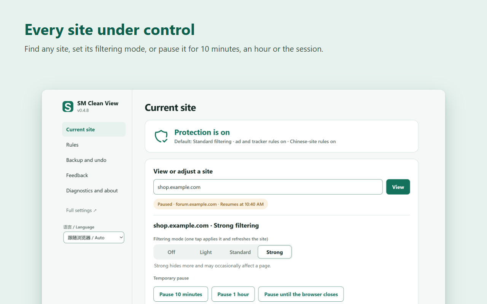
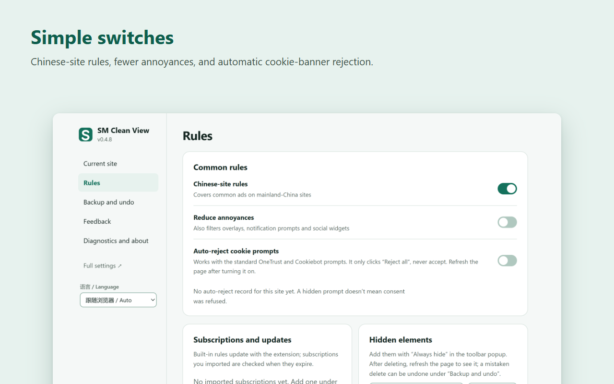
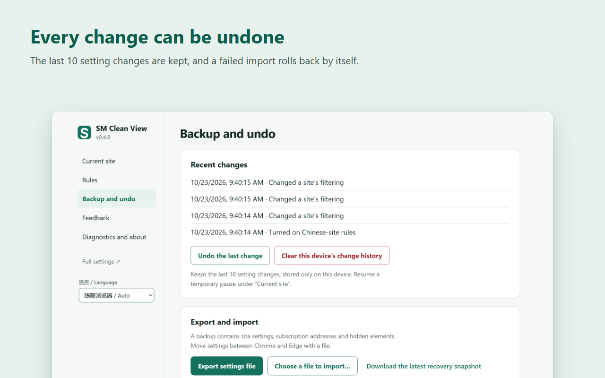
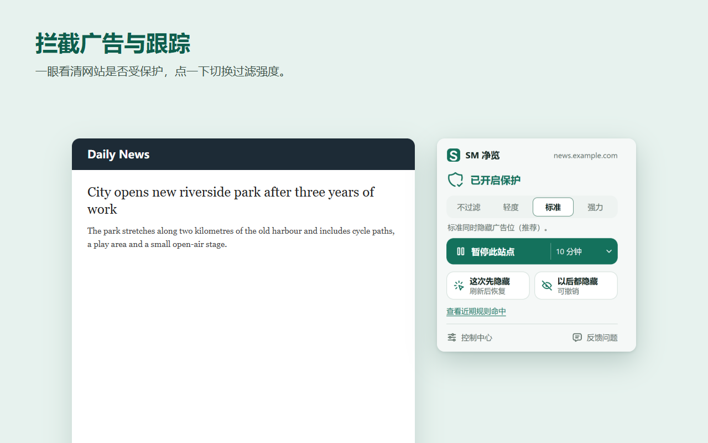
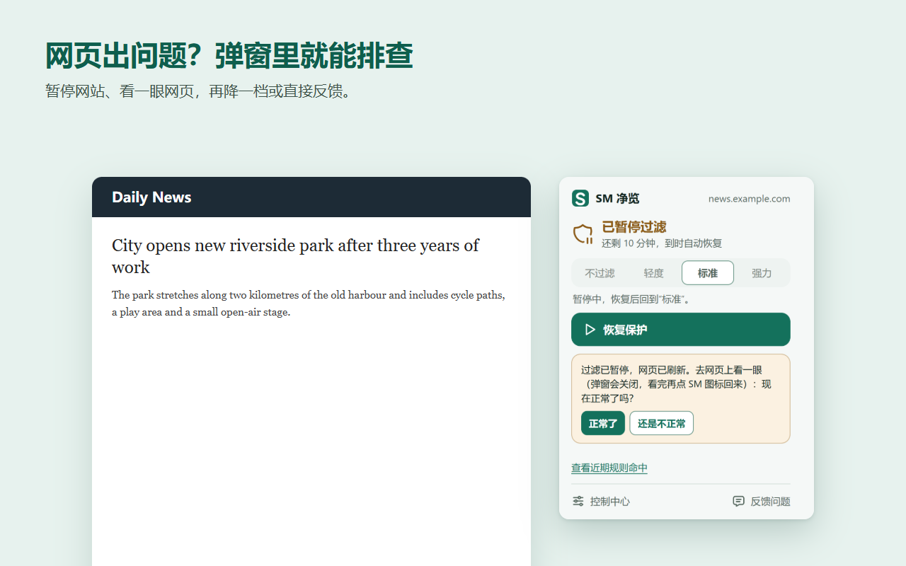
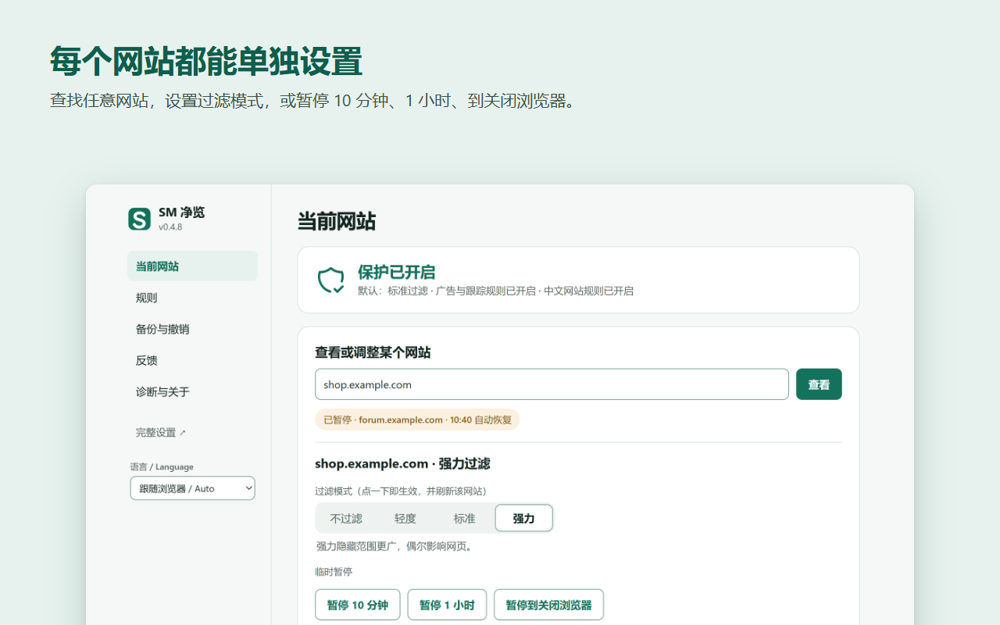
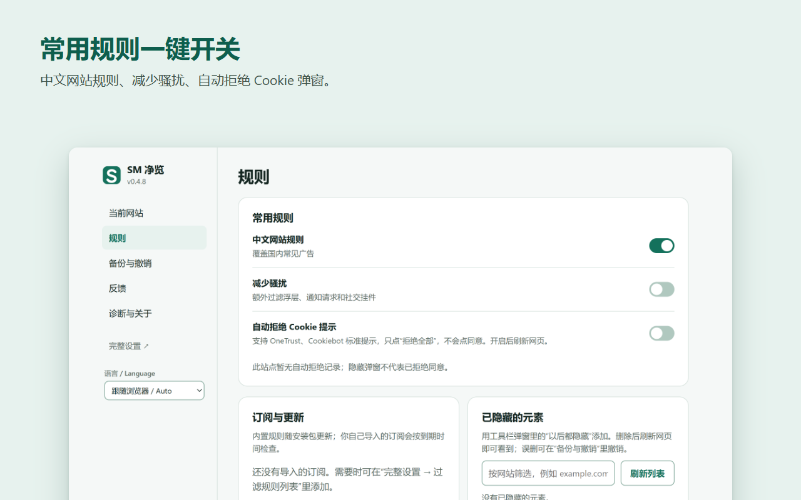
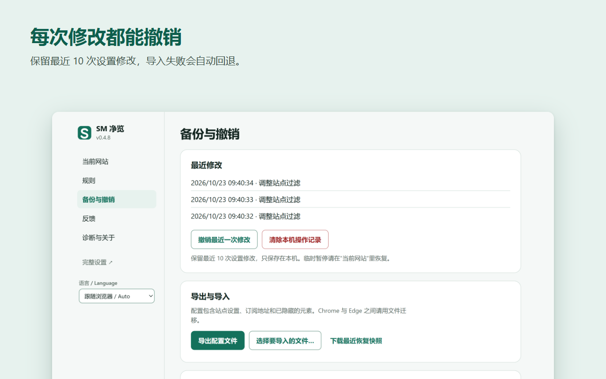

Block ads and trackers. Pause any site in one tap.
SM Clean View is a light ad and tracker blocker for Chrome and Edge, based on uBlock Origin Lite, with simple controls for when a page needs a hand.
Download the latest releasePrivacy policyFeatures
Blocks ads and trackers
The uBlock Origin Lite engine with EasyList, EasyPrivacy, uBlock filters and malware lists. The browser does the filtering, so it stays light.
One-tap site controls
Off, Light, Standard or Strong per site. Pause a site for 10 minutes, an hour or until the browser closes.
Fix broken pages step by step
Pause, check the page, lower one level for that site only, or create a feedback report.
Everything can be undone
The last 10 setting changes are kept. Imports are previewed and roll back on failure.
Fewer annoyances
Optional rules for overlays, notification prompts and social widgets, and automatic "Reject all" on OneTrust and Cookiebot banners.
Collects nothing
No analytics, no telemetry, no SeekMall servers. Settings stay in your browser.
Screenshots





Install
Store listings for Chrome and Edge are being prepared. Until then: download the latest sm-ad-filter-…-chromium.zip from Releases, unzip it to a folder that is not synced (not OneDrive), open chrome://extensions or edge://extensions, turn on Developer mode, and choose "Load unpacked".
Browser pages and extension stores can't be filtered by any extension. Some video sites deliver ads inside the video stream; those can't always be removed.
拦截广告与跟踪，一键暂停任何网站。
SM 净览是基于 uBlock Origin Lite 的轻量广告与跟踪拦截扩展，支持 Chrome 和 Edge，并在网页需要帮忙时给你简单直接的控制。
下载最新版本隐私政策功能
拦截广告与跟踪
使用 uBlock Origin Lite 引擎和 EasyList、EasyPrivacy、uBlock 规则及恶意网站列表，由浏览器完成过滤，占用很少。
网站一键控制
每个网站可选不过滤、轻度、标准、强力；可暂停 10 分钟、1 小时或到关闭浏览器。
分步修复异常网页
暂停、查看网页、只把这个网站降一档，或生成反馈报告。
每次修改都能撤销
保留最近 10 次设置修改；导入先预览，失败自动回退。
减少骚扰
可选过滤浮层、通知请求和社交挂件，可自动点击 OneTrust、Cookiebot 弹窗的"拒绝全部"。
不收集任何信息
没有统计、没有遥测、没有 SeekMall 服务器，设置只保存在你的浏览器里。
截图





安装
Chrome 和 Edge 商店版本正在准备中。在此之前：从 Releases 下载最新的 sm-ad-filter-…-chromium.zip，解压到不同步的本地文件夹（不要放在 OneDrive），打开 chrome://extensions 或 edge://extensions，开启"开发者模式"，点"加载已解压的扩展程序"。
浏览器内部页面和扩展商店，任何扩展都无法过滤。部分视频网站把广告和视频一起播放，这类广告不一定能去掉。